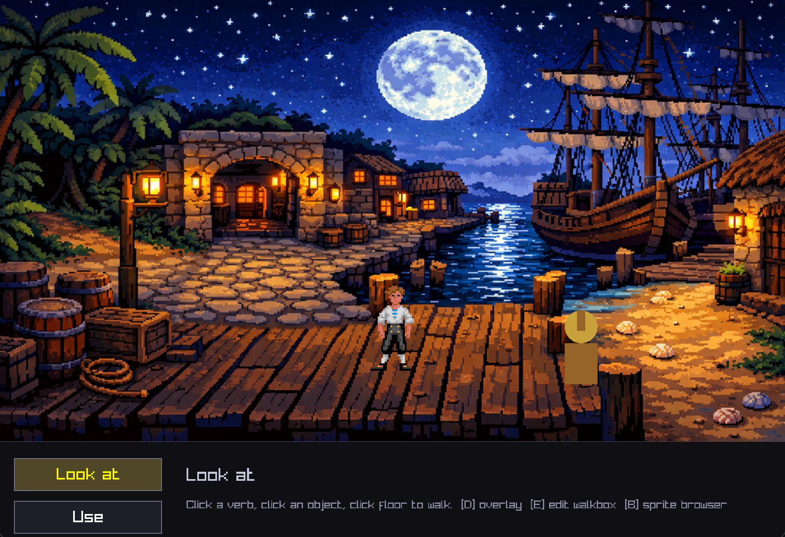

A tiny SCUMM-style point-and-click adventure engine, written in C with raylib. One room, one dock, one roguish protagonist walking around it.

Guybrush paths around the dock using Dijkstra over the walkbox visibility graph — routes around concave notches instead of shortcutting through them.
8fps walk cycles in four directions, perspective-scaled with distance, rendered with nearest-neighbour filtering. Faces the direction of travel and idles on frame 0 when stopped.
Classic SCUMM interaction model: Look at, Use, Pick up. Click a verb, click an object, actor walks over and speaks.
Hand-authored polygons re-sample the background and draw over the actor so he can pass behind things. Triangulated via ear-clipping — any simple polygon works.
Scenes can define multiple walkable regions. Each walkbox is an independent polygon — Dijkstra pathfinding works across all of them, routing through shared edges.
Cut non-walkable holes inside walkboxes. Hole polygons subtract from the parent region so the actor paths around obstacles like tables, pillars, or barrels.
Define perspective scaling with a scale line — the actor grows and shrinks based on vertical position in the scene, giving depth to flat 2D backgrounds.
Walkboxes, holes, foreground z-planes, and scale lines are all drawn in-game with the mouse — no external tools. Vertices snap, auto-order by angle, and save to plain text.
Flip through raw sprite frames and tag them into named animations. Built directly into the binary — press B to enter.
| Key | Mode | Action |
|---|---|---|
| E | Walkbox / FG editor | Click to add verts, drag to move, click edge to insert |
| W | In editor | Edit the blue walkable polygon |
| F | In editor | Edit / cycle magenta walk-behind polygons |
| N | In editor | Add another foreground polygon |
| O | In editor | Sort verts by angle (unwrap self-intersections) |
| R | In editor | Reset active polygon |
| S | In editor | Save to walkbox.txt / fg.txt |
| H | In editor | Edit hole polygons (cut non-walkable areas inside walkboxes) |
| K | In editor | Edit scale line (perspective depth scaling) |
| D | Debug overlay | Show walkbox + foreground outlines |
| B | Sprite browser | Flip frames, tag animations, save to sprites.txt |
main.c Single-file engine (~900 LOC) Makefile macOS / raylib 5.x via homebrew run.sh Compile + run build_web.sh Emscripten WebAssembly build docs/ Web build output (index.html/js/wasm/data) assets/bg-dock.png Backdrop walkbox.txt Authored walkable polygon fg.txt Authored walk-behind polygons sprites.txt Raw-sheet → named-animation mapping guybrush_sprites_v3/ 250-frame raw sheet sprites/guybrush/<anim>/ Exported, ready-to-render frames export_sprites.sh Bakes sprites.txt → sprites/guybrush/
# Native (macOS) brew install raylib # one-time ./run.sh # compile and launch # WebAssembly (requires Emscripten SDK + raylib source) ./build_web.sh # outputs to docs/
Not a reimplementation of the SCUMM bytecode VM — no .lfl / .he loading, no interpreter. Just the engine surface that makes a SCUMM-style game feel like a SCUMM game.